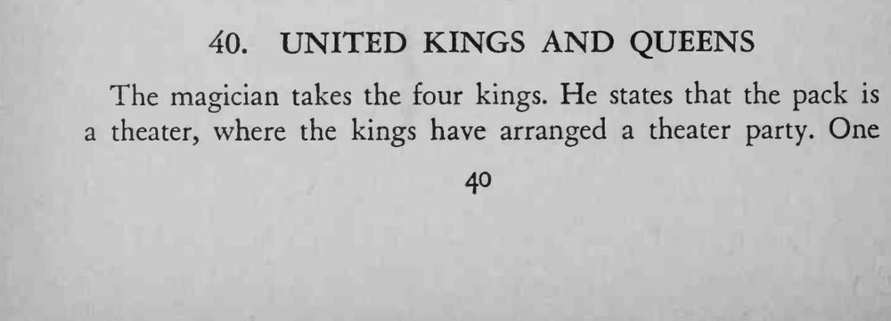
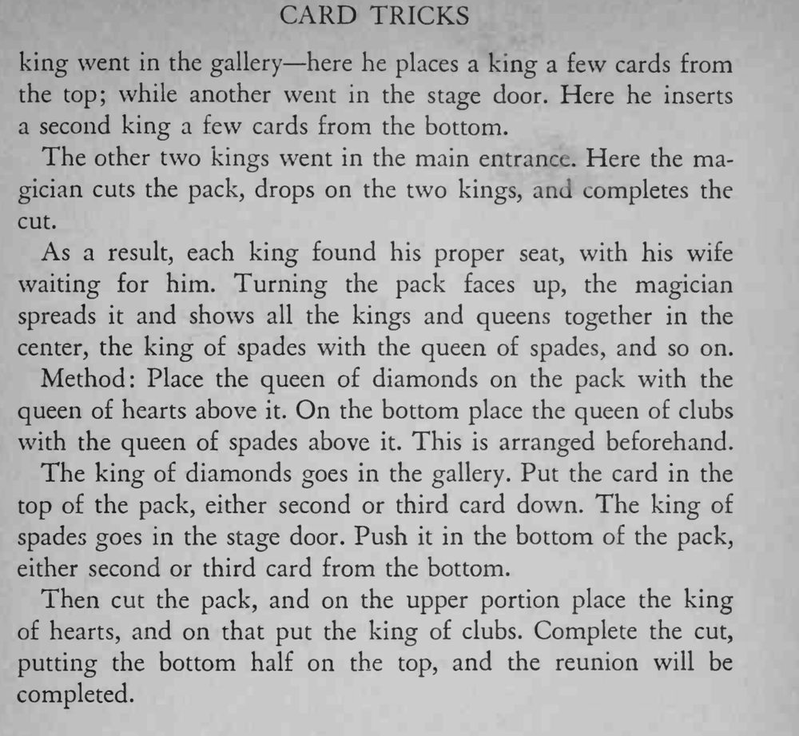

魔术师把四张 K 分别从“剧院”的各个门送进牌堆，切牌之后展开，四对同花色的 K 和 Q 都聚在牌堆中央。
两对 Q 的上下顺序要预先摆好，重聚时才能一一对应。


The magician takes the four kings. He states that the pack is a theater, where the kings have arranged a theater party. One king went in the gallery here he places a king a few cards from the top; while another went in the stage door. Here he inserts a second king a few cards from the bottom. The other two kings went in the main entrance. Here the magician cuts the pack, drops on the two kings, and completes the cut. As a result, each king found his proper seat, with his wife waiting for him. Turning the pack faces up, the magician spreads it and shows all the kings and queens together in the center, the king of spades with the queen of spades, and so on. Method: Place the queen of diamonds on the pack with the queen of hearts above it. On the bottom place the queen of clubs with the queen of spades above it. This is arranged beforehand. The king of diamonds goes in the gallery. Put the card in the top of the pack, either second or third card down. The king of spades goes in the stage door. Push it in the bottom of the pack, either second or third card from the bottom. Then cut the pack, and on the upper portion place the king of hearts, and on that put the king of clubs. Complete the cut, putting the bottom half on the top, and the reunion will be completed.